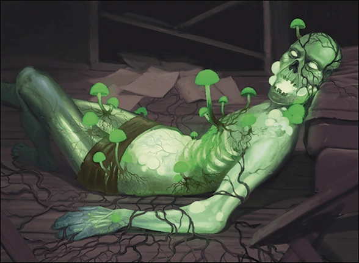
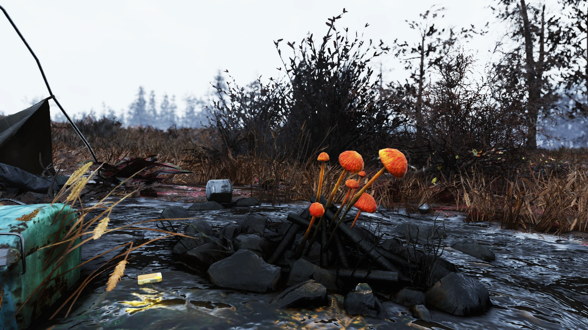
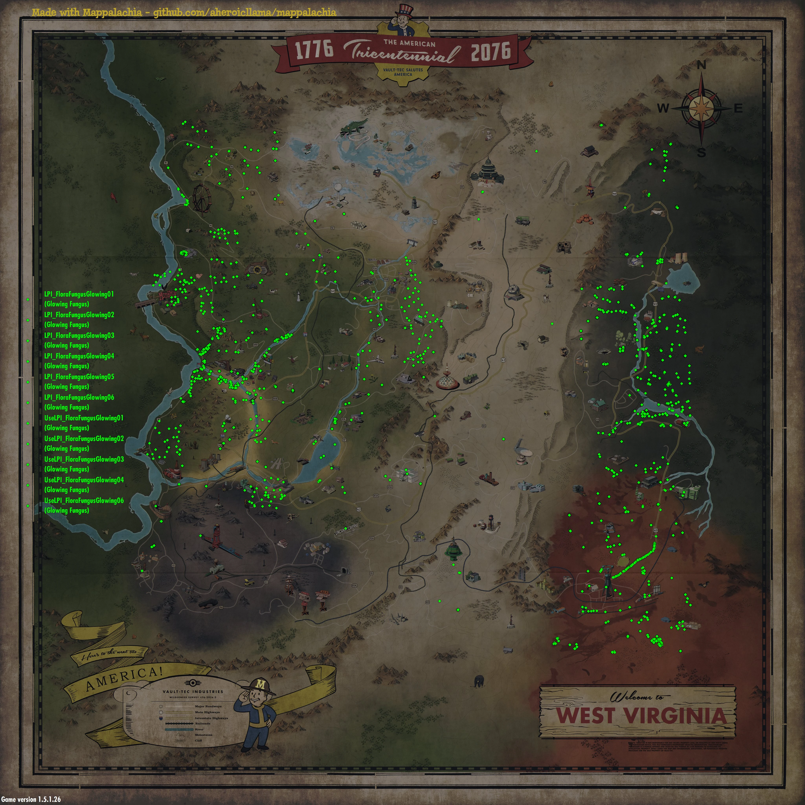
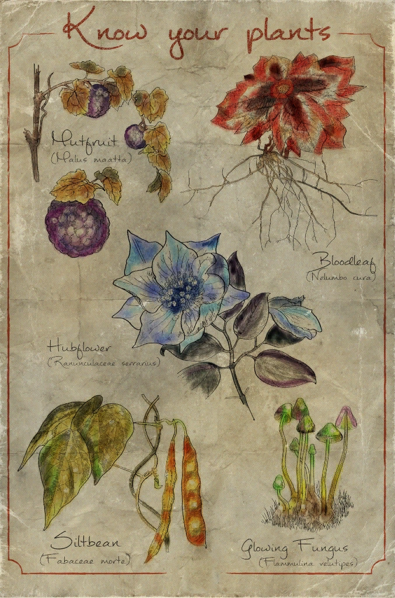
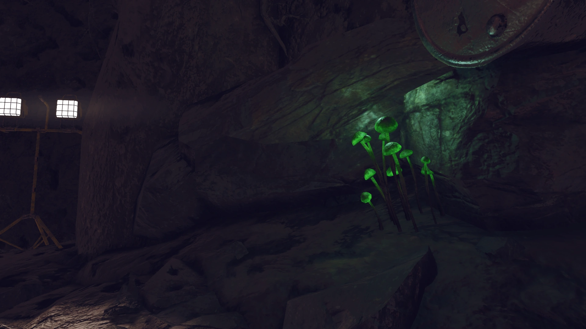
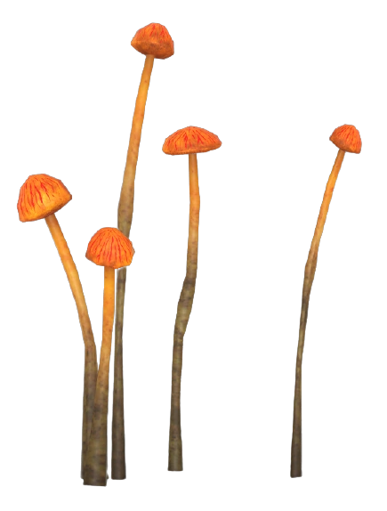
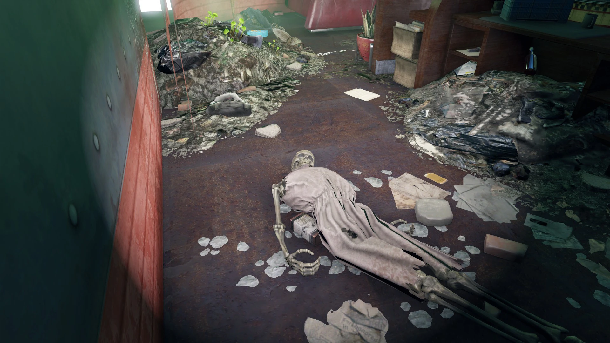
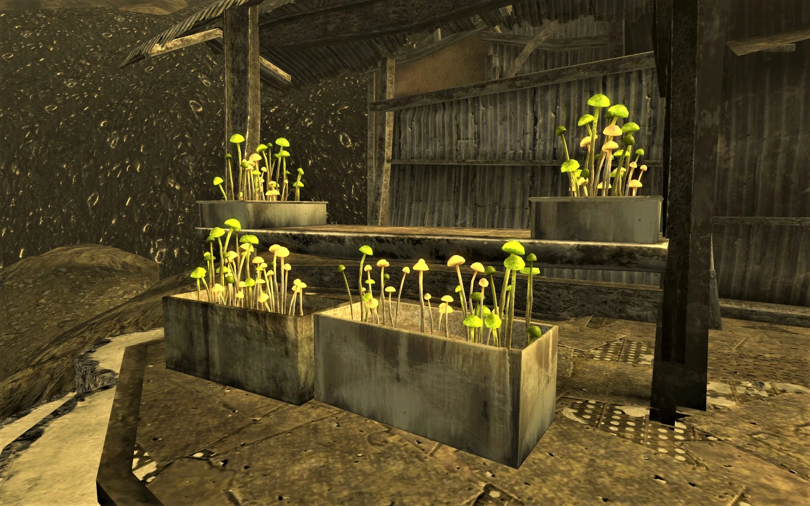

Glowing Fungus
発光キノコ（光るキノコ）
概要
発光キノコ（学名：Flammulina velutipes）は、戦前のキノコの変異種。
アパラチア、首都ウエイストランド、コモンウェルス、ザ・アイランド、さらにはモハビ・ウエイストランドまで、旧アメリカ合衆国の広範な地域に自生している。
暗闇で淡い緑色に発光する小さなキノコの群生で、洞窟内や夜間でも見つけやすい。

変異した発光キノコのイラスト
特性
湿度が高く放射能に汚染された環境を好み、地下洞窟の壁面や放射能汚染水の周辺に群生する。
死体の上に繁殖することもあり、メガ・スロスの体の上で成長する姿も確認されている。
儀式の場（Ritual Site）のように一直線に並んで洞窟のトンネルを横断する奇妙なフォーメーションを形成することもある。
シチューの材料としても使用され、Organ Caveでは採集・調理する姿が確認されている。
効果
Fallout 4
消費するとHP+10を回復するが、RAD+3の放射線を受ける。
ケミスト（Chemist）Perkの効果を受け、ランクごとにHP回復量が+50%増加する。
ゲーム内ではケミカルとして分類されているため。
| 効果 | 値 |
|---|---|
| HP回復 | +10 |
| 放射線 | +3 RAD |
| 重量 | 0.1 |
| 価値 | 6キャップ |
Fallout 76
食料として消費可能で、わずかな空腹を満たすが中程度の放射線と病気のリスクがある。
調理することで追加のメリットを得られる。
変異「草食動物（Herbivore）」で効果2倍、「肉食動物（Carnivore）」では効果なし。
腐敗時間は75分で、腐ると腐った野菜になる。
クラフト素材
Fallout 4
サバイバルモードでの重要な素材として、以下のアイテムのクラフトに使用される：
- RadAway
- 抗生物質
- ハーブ鎮痛剤
- ハーブ抗菌剤
- ハーブ興奮剤
Fallout 76
多彩なクラフトレシピの素材として使用される：
- RadAway
- ブロートフライ・ローフ
- 病気の治療薬（クランベリー湿原 / ザ・マイアー）
- 回復軟膏（ザ・マイアー）
- 光るキノコのピューレ
- 光るキノコのスープ
- ピッカクスピルスナー
- 浄水フィルター
核爆弾ゾーン（Fallout 76）
核爆弾ゾーンの影響を受けるとグローイング・マッツシュートファンガスに変異し、収穫すると生の蛍光フラックス（Raw Fluorescent Flux）を入手できる。

核爆弾ゾーンで変異した姿
入手場所
Fallout 4
- モールラットの巣穴 — 23個（一部は地面の下で到達不可）
- ボストン市長シェルターへのトンネル入口付近 — 6個
- ウォールデンポンドとロッキー・ナロウズ・パーク間の要塞化された高架下 — 5個
- ソーガス・アイアンワークス周辺のソーガス川沿い — 数個
- サンクチュアリ・ヒルズ周辺の湖 — 数個
- キャッスルのトンネル内 — 多数
- ワイルドウッド墓地 — 多数
- ダンウィッチ・ボアーズの水中祭壇周辺
- ダートマス・プロフェッショナル・ビルディング内 — 6個
- ザ・ニュークリアス（Far Harbor）内 — 約40個
Fallout 76
- フラットウッズ沿いの川 — 多数（干上がった河床からヒルフォーク・ホットドッグまで約50個）
- Highway 65のトンネル内（ワトガ北〜Abandoned Bog Town南）— 最大46個
- ナールド・シャローズ周辺 — 約18個
- マイアーズ・アイ — 約16個
- Abandoned Waste Dump — 最大16個
- シルバ農場のファストトラベルポイント近くの排水管 — 約8個
- ヒルサイド洞窟のトンネル — 7個
- ファイアベース・ハンコック — 約5個
- AVRメディカルセンター内部 — 少なくとも3個

Fallout 76での発光キノコ分布マップ
備考
- Fallout 3とFallout: New Vegasでは静的オブジェクトとして存在する（収穫不可）。
- Fallout: New Vegasでは一部の光るキノコを採取して「洞窟キノコ」や「ミュータント洞窟キノコ」を入手可能。
- メガ・スロスの体の上で増殖することがある。
- タナグラ・タウンの中心にあるアールデコ彫刻（不思議な顔）の上にも繁殖している。
- 現実世界のエノキタケ（Flammulina velutipes）がモデル。日本では「エノキ」または「エノキタケ」として知られる食用キノコ。
ギャラリー





発光キノコは地味ながらウエイストランドの生態系を支える縁の下の力持ち。
特にFallout 76ではRadAwayのクラフト素材として序盤から重宝する。フラットウッズの川沿いを歩くだけで50個近く拾えるのは、開発者がプレイヤーの序盤の苦労をわかっている証拠だと思う。
現実のエノキタケが変異のモデルというのも面白い。あの白くて細い姿からは想像できない蛍光グリーンの発光体になるのだから、放射能の力は恐ろしい。
This article was created by translating and editing Glowing fungus, Glowing fungus (Fallout 4) and Glowing fungus (Fallout 76) from Nukapedia: The Fallout Wiki.
Licensed under the Creative Commons Attribution-Share Alike License (CC BY-SA 3.0).
© Overseer Mohi's Terminal — Fallout Lore Archive
コミュニティ維持のため、寄付を受け付けております。
> COMMENTS